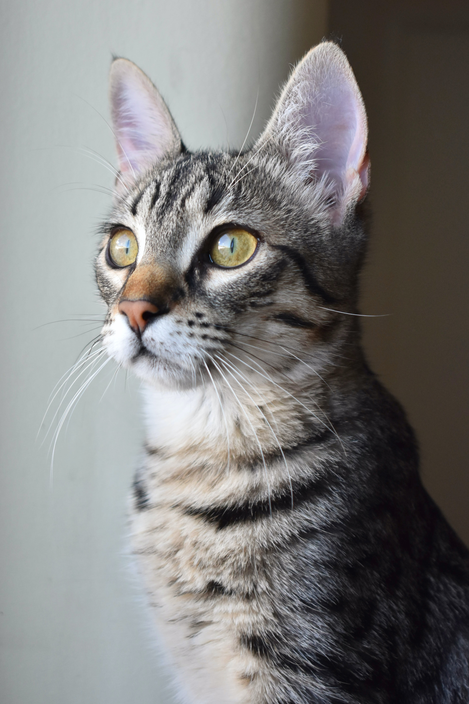

Logo
Home
About
Contact
Добро пожаловать на адаптивный сайт!
Это адаптивная страница с адаптивными изображениями, пользовательскими шрифтами и значком.
Этот кот меняет рамки в зависимости от размера экрана

Адаптивное изображение кота с использованием srcset
Изображение ниже выбрано размером больше, чем место, которое ему могли выделить на этой странице